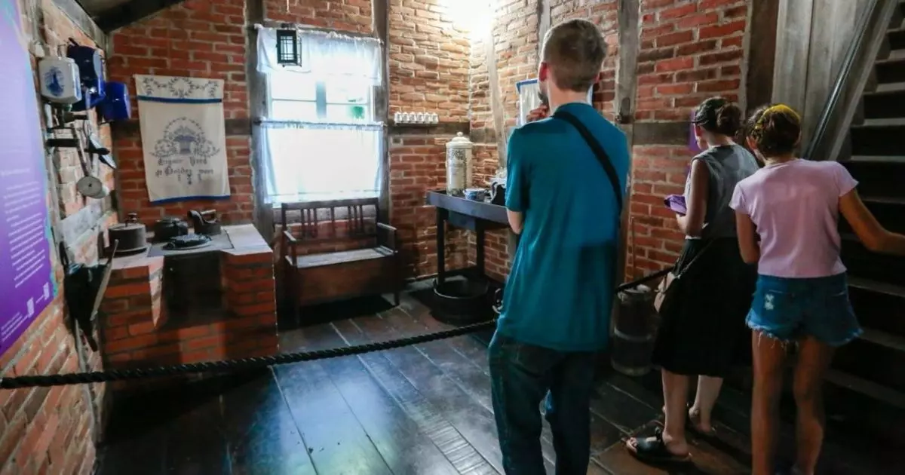

O Museu Nacional da Imigração
⚠️
Na Página Inicial existe uma pré-demonstração desse casarão!
Bem-vindo(a) ao Museu Nacional da Imigração

O Museu Nacional de Imigração e Colonização de Joinville foi fundado em 1972 e tem como objetivo preservar e divulgar a história da imigração e colonização de Joinville e região, com ênfase na contribuição dos imigrantes alemães, que foram fundamentais para o desenvolvimento da cidade.
Histórico
Fundação e Construção
A cidade de Joinville começou a ser colonizada em 1851, com a chegada dos primeiros imigrantes alemães, que se estabeleceram na região em busca de melhores condições de vida e oportunidades econômicas. Esses imigrantes trouxeram consigo suas tradições, cultura e conhecimentos, que moldaram profundamente a cidade e sua economia.
Com o objetivo de preservar essa rica história, surgiu a ideia de criar um museu que fosse capaz de reunir e conservar objetos e documentos que ilustrassem o processo de imigração e colonização. O museu foi idealizado por um grupo de pessoas interessadas em preservar a memória local, como professores, historiadores e representantes da comunidade. Em 1972, o projeto foi concretizado, com a criação do museu, inicialmente como uma pequena coleção de objetos e documentos históricos.
Arquitetura
O Prédio do Museu
O museu ocupa um prédio histórico no centro de Joinville, o antigo Palácio Rio Branco, que foi construído entre 1912 e 1913 e funcionou como sede da Prefeitura de Joinville até 1969. A arquitetura do edifício reflete a influência dos imigrantes, com elementos da arquitetura germânica, e a sua adaptação para abrigar o museu foi feita de maneira a manter essas características.
Importância Cultural
Acervo e Exposições
Com o passar dos anos, o acervo do museu foi ampliado e diversificado, passando a contar com mais de 20 mil itens, entre objetos, fotos, documentos, móveis, vestuário e utensílios domésticos. Esses itens ajudam a contar a história da imigração, mostrando como os imigrantes viveram, trabalharam e se estabeleceram na região.
Além de seu acervo permanente, o Museu Nacional de Imigração e Colonização de Joinville também desenvolve diversas atividades culturais e educativas. São realizadas visitas guiadas, workshops, palestras e eventos, além de exposições temporárias que abordam diferentes aspectos da história da imigração e da formação de Joinville.

Interior do Museu em 2010